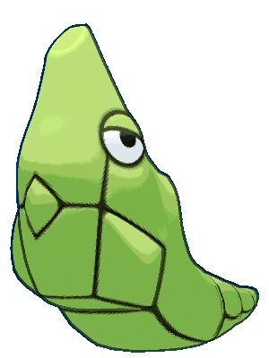
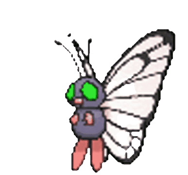
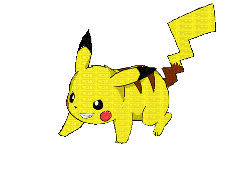

-
bulbasaur #001

- Grama
Esse Pókemon tem uma semente nas costas que crescem junto com eles ao decorrer de sua vida.
-
ivysaur #002

- Grama
quando o bulbo em suas costas cresce, parece perder a capacidade de ficar de pé em suas patas traseiras.
-
Venusaur #003

- Grama
Sua planta floresce quando está absorvendo energia solar. Ele permanesce em movimento para buscar a luz solar
-
charmander #004

- Fogo
Tem preferência por coisas quentes, basicamente 90% do seu corpo deriva de chamas vivas.
-
charmeleon #005

- Fogo
Com sua calda pegando fogo esse pókemon sempre anda de rabo quente.
-
charizard #006

- Fogo
também comparado com a phoenix este pókemon voa sobre cidades com suas asas flamejantes.
-
squirtle #007

- Água
Água móle pedra dura esse pókemon quebra qualquer coisa não se deixe levar pelo rostinho fofo.
-
Wartortle #008

- Água
Este pókemon ja pode surfar sozinho.
-
Blastoise #009

- Água
O famoso tanque de guerra subaquático. Este pókemon ajudou na busca de submarinos na 4 guerra mundial.
-
Caterpie #010

- Inseto
A lagarta que tem mais superpoder que a planta. Esta lagartinha mata a cobra e mostra a arma utilizada.
-
Metapod #011
- Inseto
Um casulo ambulante um pókemon que pode ser considerado o mais feio de todos e o pókemon de passagem, pois já esta a caminho da evolução.
-
Butterfree #012
- Inseto
a butterfly mais let'go que existe, forte destemida e linda. Este pókemon gosta de lugares altos pois gosta de voar e sentir o vento entre as orelhas.
-
Pikachu #013
- Elétrico
O Pikachu é o pókemon mais dócil inteligente e um dos mais fortes pókemons já existentes, o Super Choque 'made in china'.